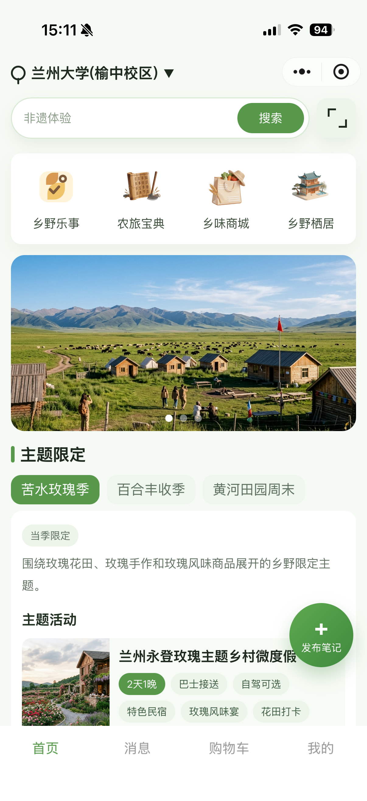
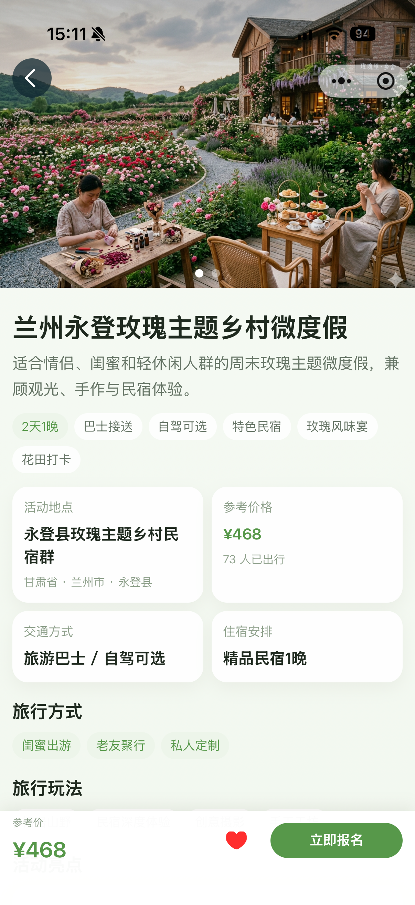
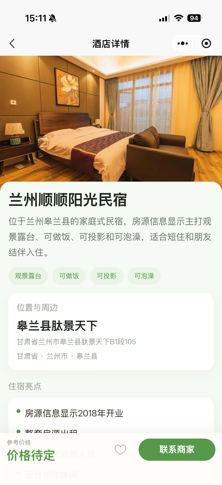
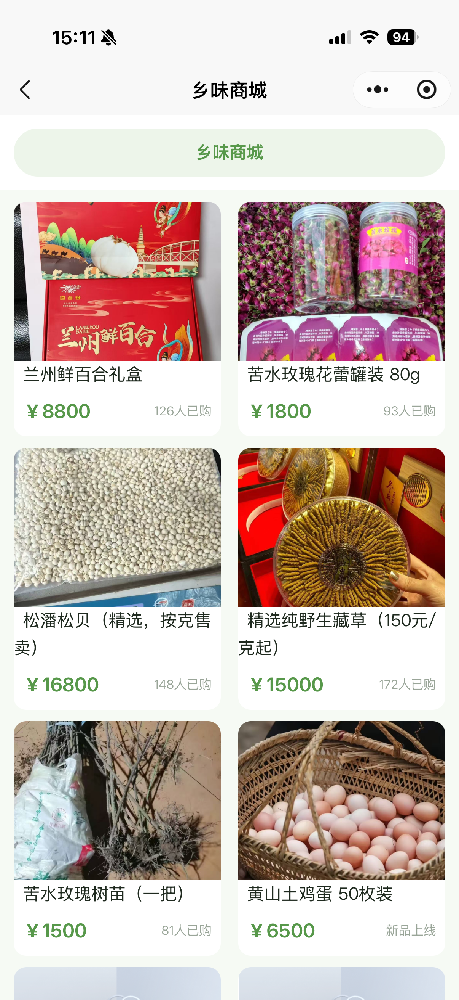
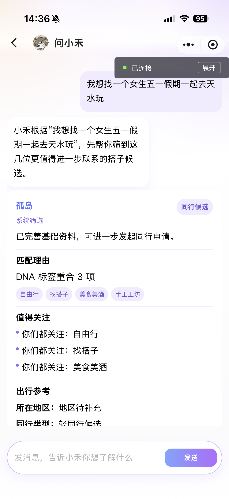
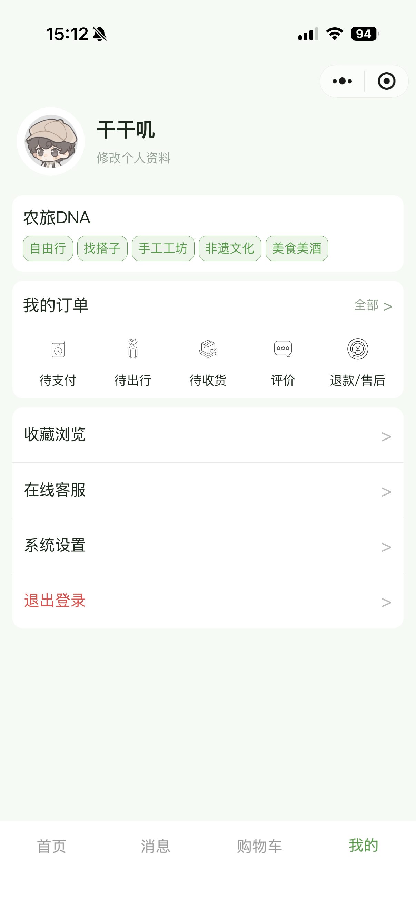

农旅e站微信小程序软件
V1.0
2026年4月1日
微信小程序应用软件
农旅e站是一套面向农业文旅场景的微信小程序软件，围绕用户在乡村旅游与农旅消费过程中的信息获取、服务查询、产品浏览、活动报名、酒店预订、商品购买、订单管理和智能咨询等需求构建一体化服务能力。软件采用“微信小程序前端 + 微信云开发 + 云函数服务”的实现方式，在移动端为用户提供便捷、连续、可交互的农旅服务体验。
随着乡村旅游、休闲农业和本地特色农产品消费的快速发展，用户在查找农旅活动、选择景点线路、预订酒店民宿、购买特色商品和咨询相关信息时，往往需要在多个平台之间切换，信息分散、流程割裂、服务响应不及时。为解决农旅服务入口分散、业务链路不完整、信息触达效率不高的问题，开发本软件以实现农旅资源展示、业务办理和智能互动的一体化。
本软件的开发目的在于为用户提供一个统一、便捷、易用的农旅服务入口，将农旅活动、景点信息、住宿服务、农特产品、知识内容和智能问答能力整合到同一微信小程序内，帮助用户快速完成信息浏览、服务选择、下单预订、订单管理和在线咨询等操作，提升农旅场景下的信息服务效率与用户体验。
基于 x64 架构个人计算机进行开发，建议使用 8GB 及以上内存、双核及以上处理器和稳定网络环境。
软件运行于支持微信客户端的智能手机终端，同时依托云端服务器完成数据存储、业务处理与接口调用。
Windows 11。
微信开发者工具、Node.js、微信云开发环境。
微信小程序平台，兼容 Android 与 iOS 系统下的微信客户端。
微信客户端、微信基础库、微信云开发、云函数运行环境。
本软件采用分层架构设计，主要由微信小程序前端、云函数服务层和云端数据支撑层组成。
其中，小程序前端提供首页、消息、购物车、我的等主导航页面，并扩展活动、酒店、景点、商城、知识学院与智能问答等业务模块。云端通过多类云函数实现数据读写和服务协同，保障移动端功能顺利运行。
软件主要由以下功能模块构成：
以下对各核心功能进行详细说明。
软件支持用户通过微信小程序完成登录，并在首次使用或特定业务场景下完善个人资料。用户可维护基础身份信息、出行人信息及相关偏好设置，为后续活动报名、订单下单和服务推荐提供数据支持。系统结合云函数完成用户身份初始化与信息同步，保证用户状态在不同业务页面之间保持一致。
首页为软件的统一服务入口，集中展示农旅推荐内容、热门业务入口和相关服务模块。用户可从首页进入活动、景点、酒店、商城、知识学院等页面，也可以通过搜索入口快速查找目标内容。首页承担整体导航和内容聚合功能，提升用户发现信息和进入业务流程的效率。
软件提供农旅活动浏览、详情查看、报名参与和订单跟踪功能。用户可以查看活动的主题信息、时间安排、地点、费用和报名要求，并根据个人需求进行报名下单。活动相关数据由云端服务统一管理，支持用户在报名完成后查看订单详情与参与记录。
软件支持景点信息展示与详情浏览，用户可查看景点介绍、位置说明、图文内容和相关服务信息。结合搜索和地区选择能力，用户可以更快筛选适合自己的农旅目的地，为出行决策提供参考。
软件提供酒店民宿信息浏览、详情查看及预订相关服务。用户可查看住宿资源的基础信息、价格说明和服务内容，并根据需要完成选择与预订操作。该模块与订单流程联动，可在个人中心查看相关记录，形成完整住宿服务链路。
商城模块用于展示农特产品及相关商品信息。用户可浏览商品详情、加入购物车、提交订单并跟踪购买记录。购物车页面负责统一管理用户已选择商品，帮助用户集中完成商品核对与结算操作，提升购物流程的连续性和便利性。
软件提供活动订单、商品订单等多类订单的统一管理能力。用户可以查看我的订单、订单详情、状态变化及历史记录，便于在报名、预订、购买等多种业务场景中统一追踪处理结果。订单管理模块提升了业务流程的透明度与用户可控性。
在浏览活动、景点、酒店或商品时，用户可将感兴趣内容加入收藏，便于后续再次查看和比较。对于已完成的活动参与或服务体验，系统支持评价与反馈，帮助沉淀用户体验信息，同时为后续服务优化提供参考依据。
软件提供消息中心和多类沟通页面，用于承载用户与平台、商家或其他业务角色之间的消息交互。通过消息模块，用户可接收通知、查看会话、处理咨询和跟进服务事项，使业务沟通不再分散在外部渠道中。
知识学院模块用于发布与展示农旅相关的知识内容、文章信息和详情页内容。用户可通过该模块获取农业文旅、出行参考、活动介绍和相关知识信息，提升软件的信息服务属性和内容价值。
软件集成“问小禾”智能问答功能，为用户提供农旅相关咨询服务。用户可在智能问答页面输入问题，系统结合云端服务完成内容理解、信息组织与结果返回，用于辅助用户进行信息查询、问题咨询和服务引导。该模块增强了软件的人机交互能力，使用户在面对复杂业务信息时能够更高效地获得帮助。
个人中心模块用于统一展示用户个人资料、订单信息、活动记录、收藏内容和其他个性化数据。用户可以在该模块中管理自己的历史操作记录，查看当前业务状态，并对个人相关信息进行维护，是软件中的统一个人服务入口。
软件依托微信云开发能力构建后端支撑。云函数负责执行登录初始化、活动信息查询、知识文章查询、订单处理、购物车相关业务、用户管理和智能问答服务调用等逻辑。通过前端页面与云函数之间的协作，系统能够在移动端完成数据读取、状态更新和业务处理，形成完整的闭环服务。
本软件是一套面向农业文旅场景的微信小程序服务系统，围绕用户从信息浏览、目的地选择、产品预订、活动报名到咨询互动的完整业务流程提供服务。系统提供首页推荐、农旅活动、景点信息、酒店民宿、农特产品商城等核心业务模块，支持按地区与关键词进行检索，查看详情信息并完成收藏、下单、购物车管理、订单查询、活动报名和评价反馈等操作。系统同时提供用户注册登录、个人资料维护、出行人管理、消息会话、平台保障与服务支持等基础功能，满足用户在农旅消费过程中的信息获取与交易处理需求。除此之外，软件还包含知识学院、内容详情浏览等信息服务能力，并集成“问小禾”智能问答模块，用于解答农旅相关问题、辅助用户进行信息咨询和服务引导。后台依托微信云开发与云函数完成用户管理、内容查询、订单处理和业务数据交互，实现前端小程序与云端服务协同运行，为用户提供便捷、连续的一站式农旅服务体验。
农旅e站软件面向农业文旅服务场景，整合了内容展示、业务办理和智能咨询等能力，能够为用户提供较为完整的农旅信息服务与业务处理支持。该软件具有明确的应用场景、完整的功能结构和实际的运行平台，具备申请软件著作权登记的文档基础。
以下截图用于展示本软件主要业务页面与核心功能界面，可作为软件使用说明书的界面示意内容。






补充完成后，可将本说明书直接导出为 PDF 作为文档鉴别材料。